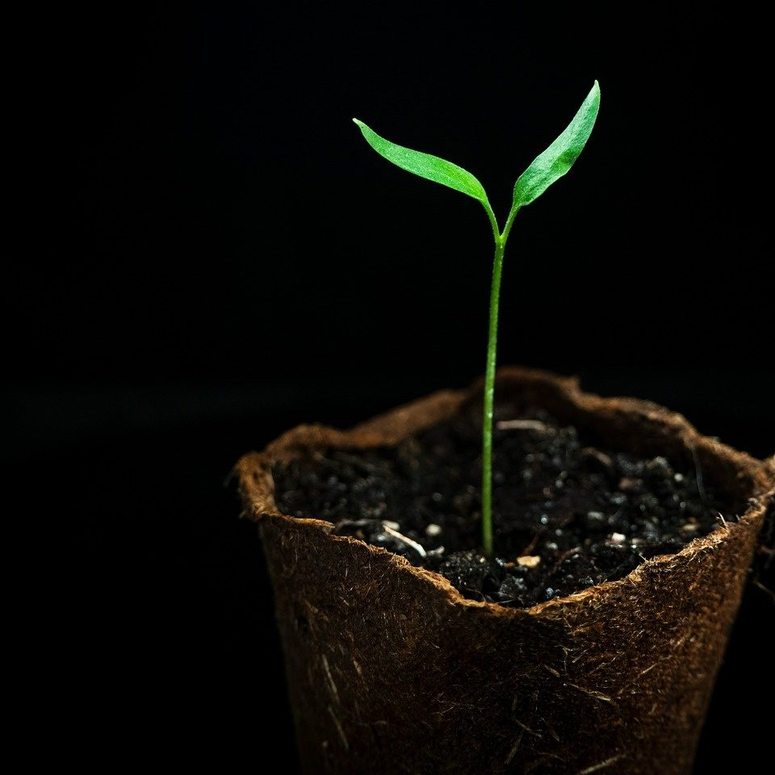
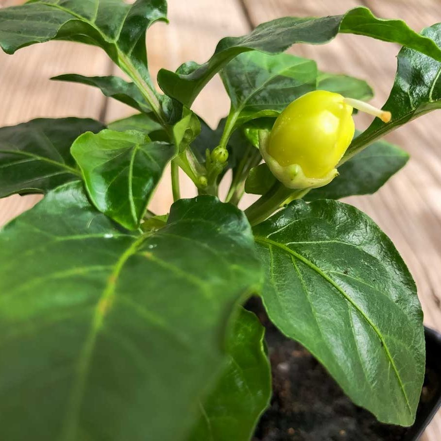

Untuk fase berbunga: 300 ml per polibag, siram ke pangkal batang. Cek dulu — masukkan jari 2 ruas ke tanah, siram jika terasa kering.
Air terserap sebelum panas, daun cepat kering sehingga jamur tidak mudah tumbuh.
Siram tambahan di hari terik. Selesaikan sebelum gelap dan jangan basahi daun.
Air cepat menguap, dan tetes di daun saat terik bisa memicu bunga rontok.
Takaran di bawah adalah panduan umum. Selalu cocokkan dengan dosis pada label kemasan.
| Fase | Jenis pupuk | Cara & takaran | Frekuensi |
|---|---|---|---|
| Persiapan tanam | Pupuk kandang matang | Campur ke media, ±⅓ isi polibag | Sekali |
| Vegetatif | NPK seimbang (mis. 16-16-16) | Larutkan, kocor 200 ml per polibag | Tiap 7 hari |
| Berbunga Sekarang | Tinggi fosfor & kalium, kurangi nitrogen | Kocor ke pangkal batang, jangan kena bunga | Tiap 7 hari |
| Berbuah | Kalium + kalsium | Kocor; tambah kalsium bila ujung buah menghitam | Tiap 7–10 hari |
| Panen | Pupuk organik cair (POC) | Dosis ringan untuk menjaga tanaman tetap berbuah | Tiap 14 hari |
Periksa bagian bawah daun dua kali seminggu.
Ciri: daun keriting ke atas, ada bercak keperakan.
Atasi: perangkap kuning, semprot pestisida nabati sore hari.
Ciri: serangga putih kecil terbang saat daun disentuh, daun menguning.
Atasi: perangkap kuning, cabut tanaman yang terkena virus kuning.
Ciri: buah berlubang kecil, lalu busuk dan rontok.
Atasi: pasang perangkap atraktan, kubur buah yang jatuh.
Ciri: bercak cekung cokelat-hitam pada buah.
Atasi: buang buah sakit, jaga jarak tanam, hindari daun basah.
Cabai sedang berbunga. Jangan siram di atas daun pada siang hari dan kurangi nitrogen, ganti dengan kalium agar bunga tidak rontok.
Unggah foto tiap minggu untuk dibandingkan.

